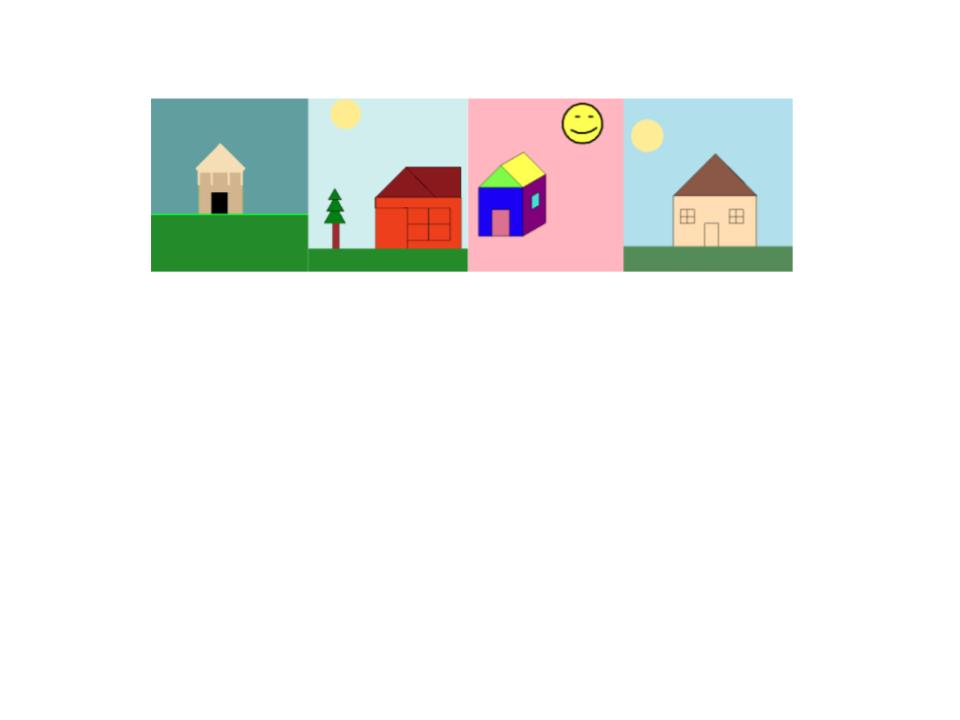
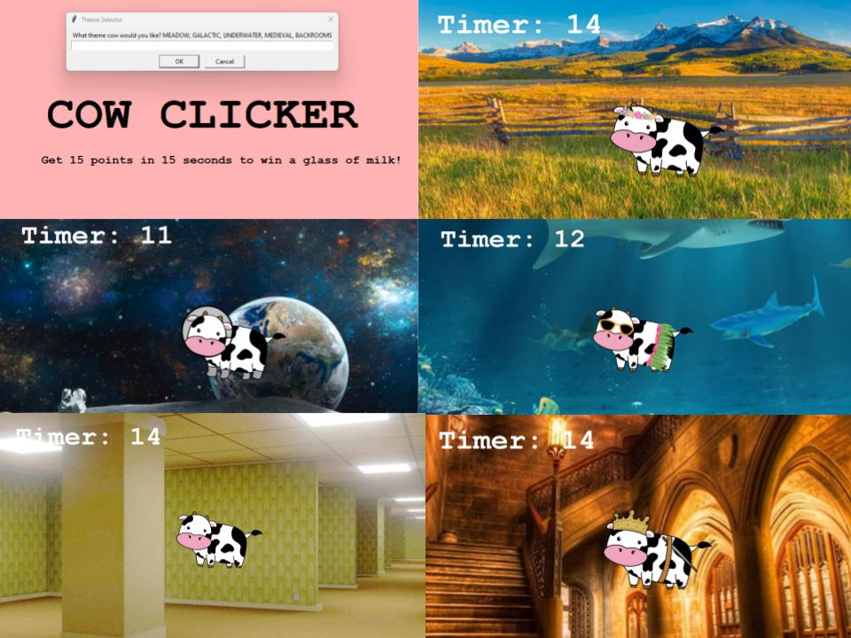
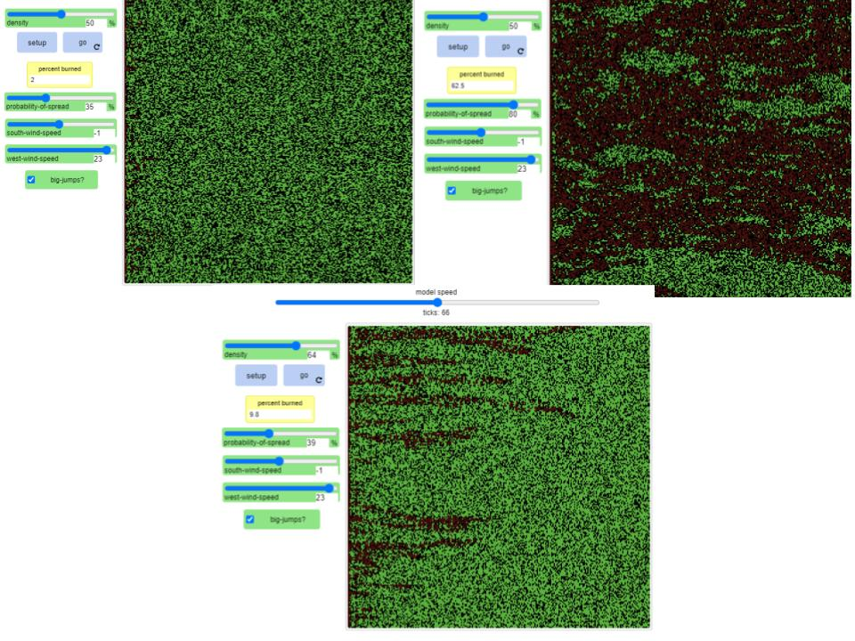
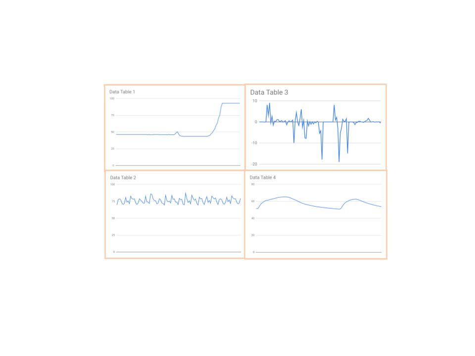

This is my Portfolio Page!
This was the first project we made - The "Which House Are You?" Buzzfeed Quiz.

The picture above is the 4 different houses you could get, based off of the user's answers/input. How this game works is that the User is asked a series of questions, and based off of their answers, they are drawn one of these 4 houses! Though it seems simple, the problem solving process was time consuming and making minor changes to perfect the houses definetly took time. We were able to display different colors and shapes via the house drawings, and use loops for deciding what house to present to the user.

The second project I worked on was called "Cow Clicker." The way it worked was that, first, the user was asked what them they would like (the picture above shows the different game options). Based off of their input, they would get to play the game of clicking on the moving cow that moo's everytime it clicks on. There was a timer and glass of milk reward if you got to 15 clicks in 20 seconds! If not - you would get a turd emoji.
The next game that we worked on was through Scratch, and we designed a Hells Kitchen themed game, where you are directed how to make a pizza, but as you are going through the actions, you are getting yelled at by Mr. Ramsay. The quotes are real quotes from his show. This game was a lot more fun to create, and I learned that I enjoy Scratch much more than python!
We used the USDA quick stats and groupby method to compile data and make graphs, such as the one above. We analyzed various pieces of data regarding honey collection in different states. We came to the concusion that since 1997 honey production has been on a decline, since bee colonies are dying off. However, recently the increase in number of honey processing centers has kept the honey production consistent.

We used NetLogo to model forest fires and how they spread. To input varying data, we used the sliders to represent different values. We were thus able to model real life scenarios and see the effects virtually. This was useful because simulating a forest fire in real life would be unrealistic and cause lots of damage, so being able to mimic this online was a more practical solution.
